########################################
# xx
########################################
### argss:
# xxData analysis all studies
1 Notes
2 global variables
Define your global variables (e.g., to reduce run time):
3 functions
4 load packages, functions, and data
4.1 packages
### load packages (also packages loaded, which are not needed for data preperation)
require(pacman)
p_load('tidyverse', 'jsonlite',
'stargazer', 'DT', 'psych',
'writexl', 'associatoR',
'ggstatsplot',
'afex', 'emmeans', 'effectsize',
'moments', 'lavaan', 'semPlot')
# devtools::install_github("samuelae/associatoR")4.2 load external functions
### load functions
# print(getwd())
setwd("functions")
for(i in 1:length(dir())){
# print(dir()[i])
source(dir()[i], encoding = "utf-8")
}4.3 load prepared data
setwd("outputs/questionnaire")
ques_study <- readRDS(file = paste0("ques_study", ".rds"))setwd("outputs/associations_translated")
ass_study <- readxl::read_excel(path = paste0("ass_study_translated_sentiment", ".xlsx"), sheet = 1)
str(ass_study)tibble [18,960 × 14] (S3: tbl_df/tbl/data.frame)
$ participant_id : chr [1:18960] "6914df322c0ecd3bdadf7251" "6914df322c0ecd3bdadf7251" "6914df322c0ecd3bdadf7251" "6914df322c0ecd3bdadf7251" ...
$ study_condition : chr [1:18960] "Diagnostic" "Diagnostic" "Diagnostic" "Diagnostic" ...
$ gender : chr [1:18960] "male" "male" "male" "male" ...
$ age : num [1:18960] 33 33 33 33 33 33 33 33 33 33 ...
$ cue : chr [1:18960] "Diagnostic" "Diagnostic" "Diagnostic" "Diagnostic" ...
$ valence : num [1:18960] 6 7 5 6 7 NA NA NA NA NA ...
$ response : chr [1:18960] "Richtig" "Fortschritt" "Zukunft" "Zusammenspiel" ...
$ response_position : num [1:18960] 1 2 3 4 5 1 2 3 4 5 ...
$ response_level : num [1:18960] 1 1 1 1 1 2 2 2 2 2 ...
$ timestamp : POSIXct[1:18960], format: "2025-11-24 08:16:27" "2025-11-24 08:16:35" ...
$ time_diff_sec : num [1:18960] 0 7.92 11.7 19.54 27.42 ...
$ response_translated: chr [1:18960] "correct" "progress" "future" "interaction" ...
$ sentiment_label : chr [1:18960] "POSITIVE" "POSITIVE" "POSITIVE" "POSITIVE" ...
$ sentiment_score : num [1:18960] 0.997 0.99 0.984 0.985 0.997 ...dim(ass_study)[1] 18960 145 check and compute mean values of valence, scales
5.1 mean values of valence
library(dplyr)
compute_mean_sd_valence <- function(data,
id_col = "participant_id",
condition_col = "study_condition",
valence_col = "valence") {
data %>%
mutate(
valence = as.numeric(.data[[valence_col]])
) %>%
filter(!is.na(valence)) %>%
group_by(
participant_id = .data[[id_col]],
study_condition = .data[[condition_col]]
) %>%
summarise(
mean_valence = mean(valence, na.rm = TRUE),
sd_valence = sd(valence, na.rm = TRUE),
n_ratings = n(),
.groups = "drop"
)
}
mean_sd_valence_per_person <- compute_mean_sd_valence(ass_study)
str(mean_sd_valence_per_person)tibble [629 × 5] (S3: tbl_df/tbl/data.frame)
$ participant_id : chr [1:629] "556958d1fdf99b7af5d5b21a" "55c629bcfdf99b44204e74e2" "5702439e7a84480009b6413d" "5962799cb752840001ca478b" ...
$ study_condition: chr [1:629] "Grading" "AutonomousWeapons" "AutonomousWeapons" "Migration" ...
$ mean_valence : num [1:629] 4 3.2 1 2.8 4.4 3.6 1.2 2 3.4 1.6 ...
$ sd_valence : num [1:629] 1.58 2.59 0 1.64 2.3 ...
$ n_ratings : int [1:629] 5 5 5 5 5 5 5 5 5 5 ...append variable to ques_study:
ques_study <- ques_study %>%
left_join(
mean_sd_valence_per_person %>%
select(participant_id, mean_valence, sd_valence),
by = c("PROLIFIC_PID" = "participant_id")
)5.2 mean values of scales
5.2.1 EFA overall
Remark: factors scores were computed using “tenBerge”, which preserves correlation structure, but not as widely used in applied psych research (often “regression” used).
#### Overall EFA
regExOverall <- "^AIAS|^PTTA"
psych::cor.plot(r = cor(ques_study[, str_detect(string = colnames(ques_study),
pattern = regExOverall)]
, use = "pairwise.complete.obs"),
upper = FALSE, xlas = 2, main = "Overall")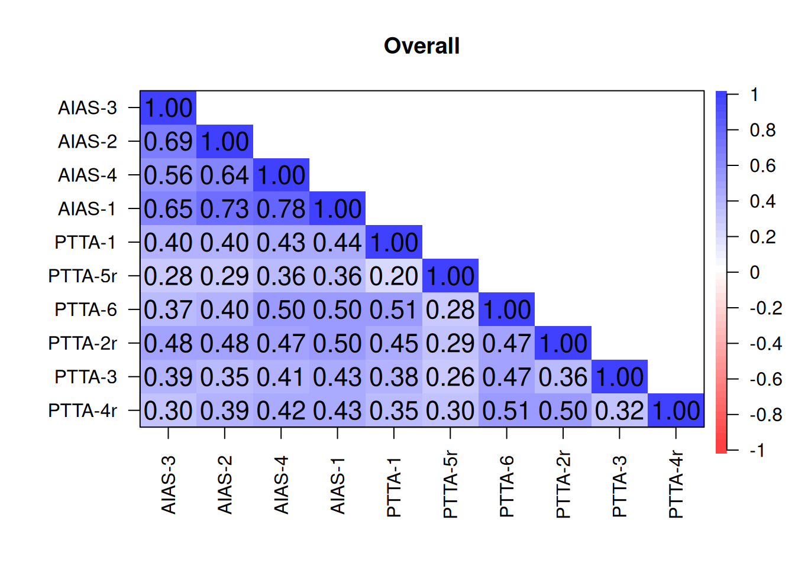
#> parallel analysis
tmp_parallelAnalysis <- dimensionalityTest(label = "Overall",
regEx = regExOverall, dataset = ques_study)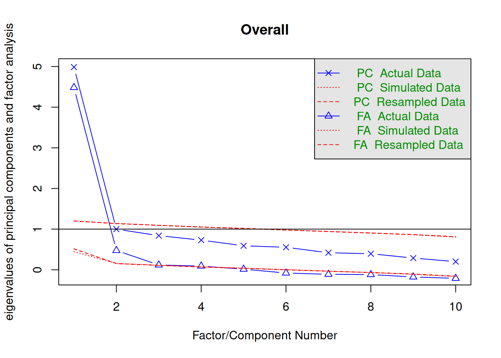
Parallel analysis suggests that the number of factors = 2 and the number of components = 1
Overall
Number of components: 1 #> EFA
tmp_EFA_overall <- explorativeFactorAnalysis(label = "Overall",
regEx = regExOverall,
dataset = ques_study, nfac = tmp_parallelAnalysis$nfact) # manually setLoading required namespace: GPArotationWarning in fa.stats(r = r, f = f, phi = phi, n.obs = n.obs, np.obs = np.obs, :
The estimated weights for the factor scores are probably incorrect. Try a
different factor score estimation method.tmp_EFA_overall[[1]]Factor Analysis using method = minres
Call: psych::fa(r = tmp_cor, nfactors = nfac, rotate = "promax", cor = "cor")
Standardized loadings (pattern matrix) based upon correlation matrix
MR1 MR2 h2 u2 com
AIAS-3 0.79 -0.04 0.58 0.42 1.0
AIAS-2 0.91 -0.09 0.71 0.29 1.0
AIAS-4 0.65 0.19 0.65 0.35 1.2
AIAS-1 0.83 0.07 0.79 0.21 1.0
PTTA-1 0.07 0.57 0.39 0.61 1.0
PTTA-5r 0.18 0.27 0.18 0.82 1.8
PTTA-6 -0.15 0.89 0.63 0.37 1.1
PTTA-2r 0.18 0.53 0.47 0.53 1.2
PTTA-3 0.11 0.48 0.33 0.67 1.1
PTTA-4r -0.04 0.67 0.41 0.59 1.0
MR1 MR2
SS loadings 2.80 2.33
Proportion Var 0.28 0.23
Cumulative Var 0.28 0.51
Proportion Explained 0.55 0.45
Cumulative Proportion 0.55 1.00
With factor correlations of
MR1 MR2
MR1 1.00 0.75
MR2 0.75 1.00
Mean item complexity = 1.1
Test of the hypothesis that 2 factors are sufficient.
df null model = 45 with the objective function = 4.66
df of the model are 26 and the objective function was 0.21
The root mean square of the residuals (RMSR) is 0.03
The df corrected root mean square of the residuals is 0.04
Fit based upon off diagonal values = 1
Measures of factor score adequacy
MR1 MR2
Correlation of (regression) scores with factors 0.95 0.92
Multiple R square of scores with factors 0.91 0.85
Minimum correlation of possible factor scores 0.82 0.70tmp_EFA_overall[[1]]$loadings
Loadings:
MR1 MR2
AIAS-3 0.791
AIAS-2 0.909
AIAS-4 0.654 0.187
AIAS-1 0.835
PTTA-1 0.566
PTTA-5r 0.183 0.270
PTTA-6 -0.145 0.894
PTTA-2r 0.184 0.534
PTTA-3 0.113 0.483
PTTA-4r 0.672
MR1 MR2
SS loadings 2.686 2.213
Proportion Var 0.269 0.221
Cumulative Var 0.269 0.4905.2.2 Descriptives, correlation plot, EFA, CFA for AIAS
regEx <- "^AIAS"
nameVariable <- "AIAS"
tmp_numVars <- sum(str_detect(string = colnames(ques_study), pattern = regEx))
cat("\n>>>", tmp_numVars, "items )<<<\n\n")
>>> 4 items )<<<tmp_dat <- na.omit(ques_study[,str_detect(string = colnames(ques_study), pattern = regEx)])
tmp <- CFAstats(dataset = tmp_dat, regularExp = regEx, labelLatent = str_remove(string = nameVariable, pattern = "mean_"),
showPlots = TRUE,
computeEFA = TRUE,
computeCFA = TRUE,
computeCFAMplus = FALSE)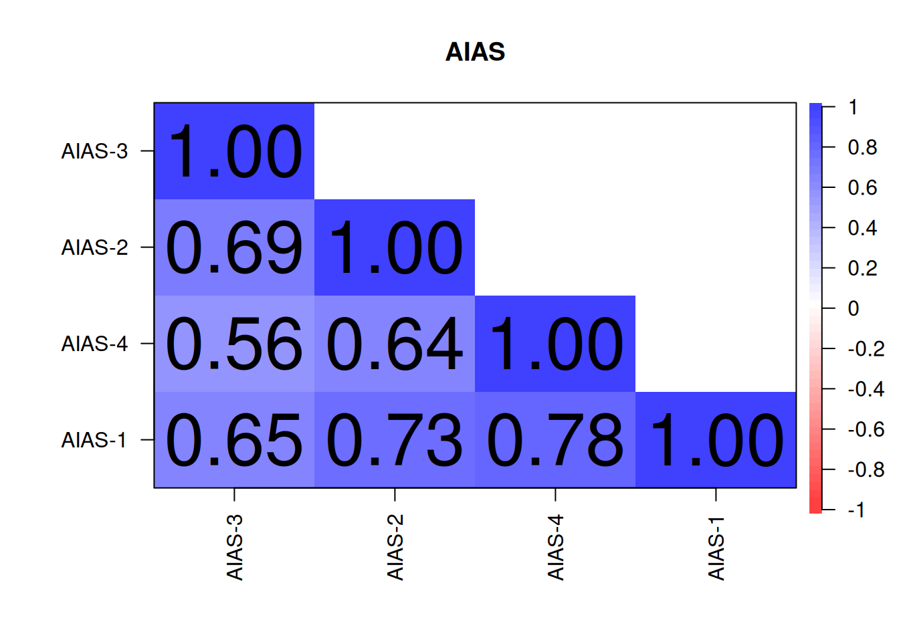
Warning in ks.test.default(x = x, y = "pnorm", mean(x), sd(x)): ties should not
be present for the one-sample Kolmogorov-Smirnov test
Warning in ks.test.default(x = x, y = "pnorm", mean(x), sd(x)): ties should not
be present for the one-sample Kolmogorov-Smirnov test
Warning in ks.test.default(x = x, y = "pnorm", mean(x), sd(x)): ties should not
be present for the one-sample Kolmogorov-Smirnov test
Warning in ks.test.default(x = x, y = "pnorm", mean(x), sd(x)): ties should not
be present for the one-sample Kolmogorov-Smirnov test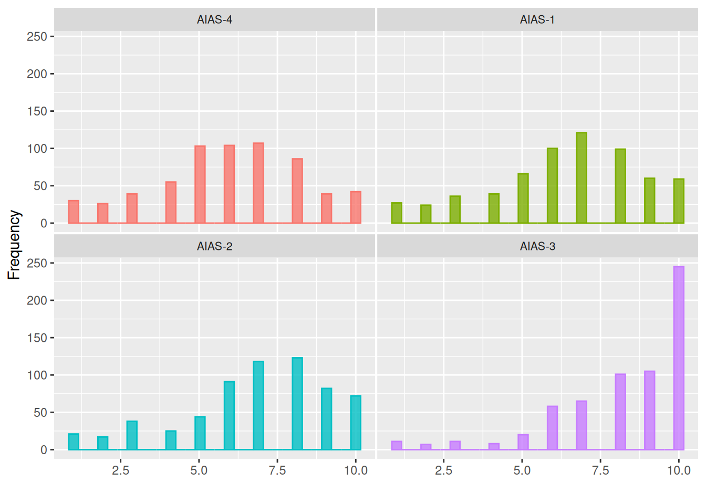
descriptive statistics:
Mean SD Median CoeffofVariation Minimum Maximun Lower Quantile
AIAS-3 8.23 2.08 9 0.25 1 10 1
AIAS-2 6.82 2.31 7 0.34 1 10 1
AIAS-4 5.97 2.29 6 0.38 1 10 1
AIAS-1 6.40 2.36 7 0.37 1 10 1
Upper Quantile Skewness Kurtosis(-3) KS-Test
AIAS-3 10 -1.43 1.92 0
AIAS-2 10 -0.73 -0.04 0
AIAS-4 10 -0.28 -0.43 0
AIAS-1 10 -0.51 -0.35 0
variables under investigation: AIAS3 AIAS2 AIAS4 AIAS1
Cronbachs Alpha: 0.89
Error in polychoric(x, correct = correct) :
You have more than8 categories for your items, polychoric is probably not needed
[1] "use instead of polychoric correlations pearson correlations"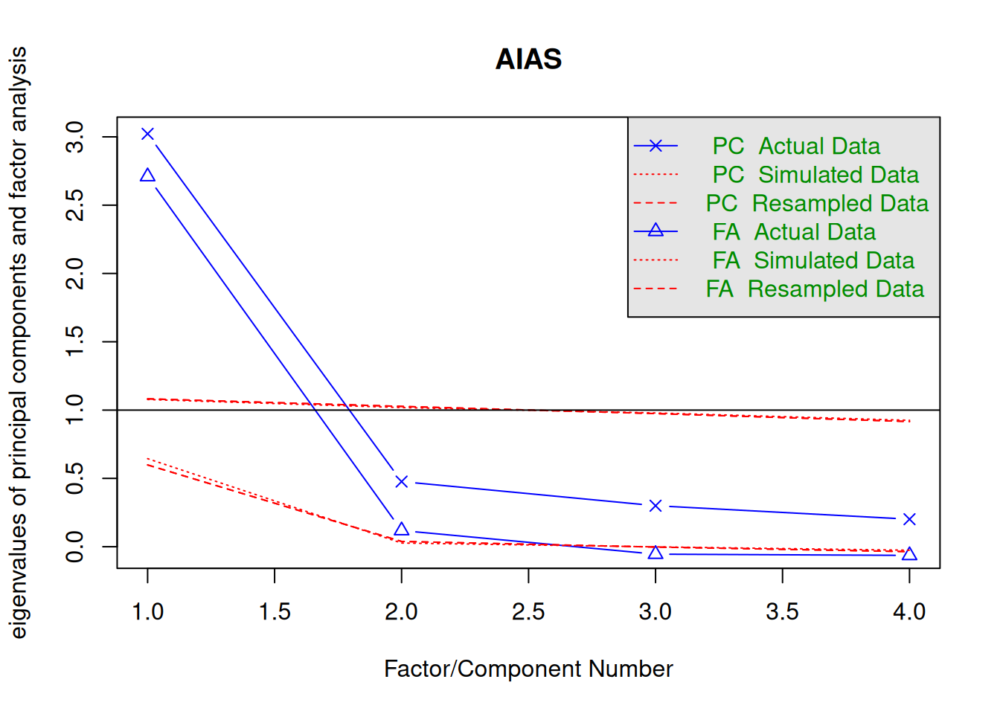
Parallel analysis suggests that the number of factors = 2 and the number of components = 1
AIAS
Number of components: 1 Using Pearson correlations instead of polychoric correlations.
EFA factor loadings (1 factor solution):
Loadings:
MR1
AIAS3 0.746
AIAS2 0.834
AIAS4 0.799
AIAS1 0.905
MR1
SS loadings 2.710
Proportion Var 0.677
CFA summary and fit statistics:
lavaan 0.6.17 ended normally after 22 iterations
Estimator ML
Optimization method NLMINB
Number of model parameters 8
Number of observations 631
Model Test User Model:
Standard Scaled
Test Statistic 55.781 50.500
Degrees of freedom 2 2
P-value (Chi-square) 0.000 0.000
Scaling correction factor 1.105
Yuan-Bentler correction (Mplus variant)
Model Test Baseline Model:
Test statistic 1541.121 1038.239
Degrees of freedom 6 6
P-value 0.000 0.000
Scaling correction factor 1.484
User Model versus Baseline Model:
Comparative Fit Index (CFI) 0.965 0.953
Tucker-Lewis Index (TLI) 0.895 0.859
Robust Comparative Fit Index (CFI) 0.965
Robust Tucker-Lewis Index (TLI) 0.895
Loglikelihood and Information Criteria:
Loglikelihood user model (H0) -4891.665 -4891.665
Scaling correction factor 1.406
for the MLR correction
Loglikelihood unrestricted model (H1) -4863.775 -4863.775
Scaling correction factor 1.345
for the MLR correction
Akaike (AIC) 9799.331 9799.331
Bayesian (BIC) 9834.909 9834.909
Sample-size adjusted Bayesian (SABIC) 9809.510 9809.510
Root Mean Square Error of Approximation:
RMSEA 0.206 0.196
90 Percent confidence interval - lower 0.162 0.154
90 Percent confidence interval - upper 0.255 0.242
P-value H_0: RMSEA <= 0.050 0.000 0.000
P-value H_0: RMSEA >= 0.080 1.000 1.000
Robust RMSEA 0.206
90 Percent confidence interval - lower 0.159
90 Percent confidence interval - upper 0.257
P-value H_0: Robust RMSEA <= 0.050 0.000
P-value H_0: Robust RMSEA >= 0.080 1.000
Standardized Root Mean Square Residual:
SRMR 0.035 0.035
Parameter Estimates:
Standard errors Sandwich
Information bread Observed
Observed information based on Hessian
Latent Variables:
Estimate Std.Err z-value P(>|z|) Std.lv Std.all
AIAS =~
AIAS3 1.000 1.516 0.730
AIAS2 1.232 0.062 19.941 0.000 1.868 0.810
AIAS4 1.246 0.077 16.106 0.000 1.890 0.825
AIAS1 1.421 0.084 16.925 0.000 2.155 0.914
Variances:
Estimate Std.Err z-value P(>|z|) Std.lv Std.all
.AIAS3 2.013 0.187 10.743 0.000 2.013 0.467
.AIAS2 1.834 0.192 9.530 0.000 1.834 0.344
.AIAS4 1.680 0.133 12.651 0.000 1.680 0.320
.AIAS1 0.910 0.145 6.254 0.000 0.910 0.164
AIAS 2.299 0.291 7.894 0.000 1.000 1.000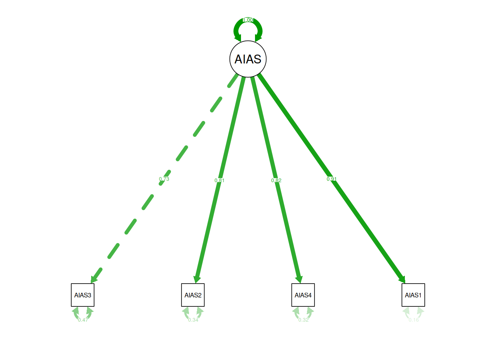
CFA first 6 Modification Indices:
lhs op rhs mi epc sepc.lv sepc.all sepc.nox
15 AIAS4 ~~ AIAS1 59.011 1.102 1.102 0.892 0.892
10 AIAS3 ~~ AIAS2 59.011 0.767 0.767 0.399 0.399
12 AIAS3 ~~ AIAS1 15.239 -0.420 -0.420 -0.311 -0.311
13 AIAS2 ~~ AIAS4 15.239 -0.454 -0.454 -0.259 -0.259
14 AIAS2 ~~ AIAS1 11.832 -0.478 -0.478 -0.370 -0.370
11 AIAS3 ~~ AIAS4 11.832 -0.340 -0.340 -0.185 -0.1855.2.3 Descriptives, correlation plot, EFA, CFA for PTTA
regEx <- "^PTTA"
nameVariable <- "PTTA"
tmp_numVars <- sum(str_detect(string = colnames(ques_study), pattern = regEx))
cat("\n>>>", tmp_numVars, "items )<<<\n\n")
>>> 6 items )<<<tmp_dat <- na.omit(ques_study[,str_detect(string = colnames(ques_study), pattern = regEx)])
tmp <- CFAstats(dataset = tmp_dat, regularExp = regEx, labelLatent = str_remove(string = nameVariable, pattern = "mean_"),
showPlots = TRUE,
computeEFA = TRUE,
computeCFA = TRUE,
computeCFAMplus = FALSE)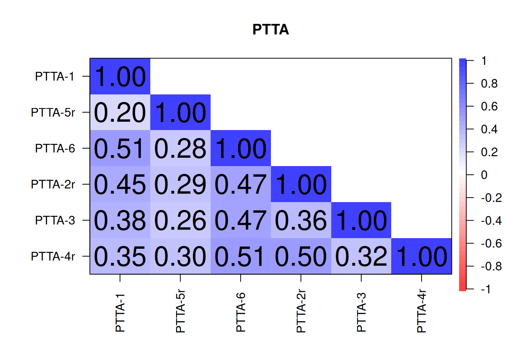
Warning in ks.test.default(x = x, y = "pnorm", mean(x), sd(x)): ties should not
be present for the one-sample Kolmogorov-Smirnov test
Warning in ks.test.default(x = x, y = "pnorm", mean(x), sd(x)): ties should not
be present for the one-sample Kolmogorov-Smirnov test
Warning in ks.test.default(x = x, y = "pnorm", mean(x), sd(x)): ties should not
be present for the one-sample Kolmogorov-Smirnov test
Warning in ks.test.default(x = x, y = "pnorm", mean(x), sd(x)): ties should not
be present for the one-sample Kolmogorov-Smirnov test
Warning in ks.test.default(x = x, y = "pnorm", mean(x), sd(x)): ties should not
be present for the one-sample Kolmogorov-Smirnov test
Warning in ks.test.default(x = x, y = "pnorm", mean(x), sd(x)): ties should not
be present for the one-sample Kolmogorov-Smirnov test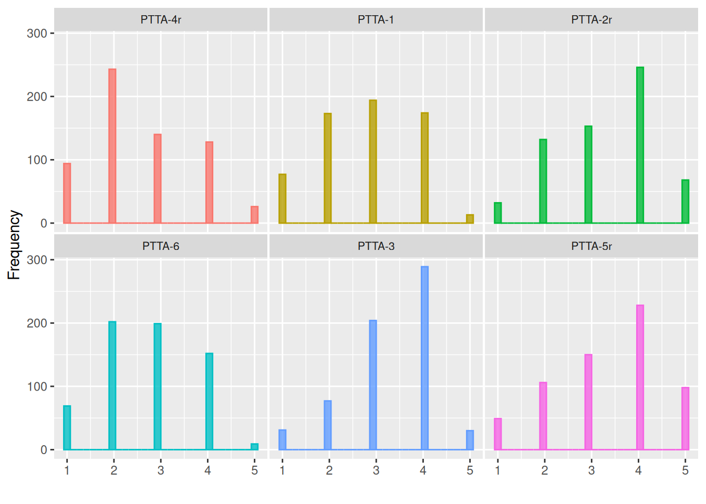
descriptive statistics:
Mean SD Median CoeffofVariation Minimum Maximun Lower Quantile
PTTA-1 2.80 1.04 3 0.37 1 5 1
PTTA-5r 3.35 1.16 4 0.35 1 5 1
PTTA-6 2.73 0.99 3 0.36 1 5 1
PTTA-2r 3.29 1.07 3 0.33 1 5 1
PTTA-3 3.33 0.93 4 0.28 1 5 1
PTTA-4r 2.60 1.09 2 0.42 1 5 1
Upper Quantile Skewness Kurtosis(-3) KS-Test
PTTA-1 5 -0.13 -0.90 0
PTTA-5r 5 -0.41 -0.69 0
PTTA-6 5 -0.03 -0.85 0
PTTA-2r 5 -0.33 -0.71 0
PTTA-3 5 -0.72 0.14 0
PTTA-4r 5 0.34 -0.76 0
variables under investigation: PTTA1 PTTA5r PTTA6 PTTA2r PTTA3 PTTA4r
Cronbachs Alpha: 0.78 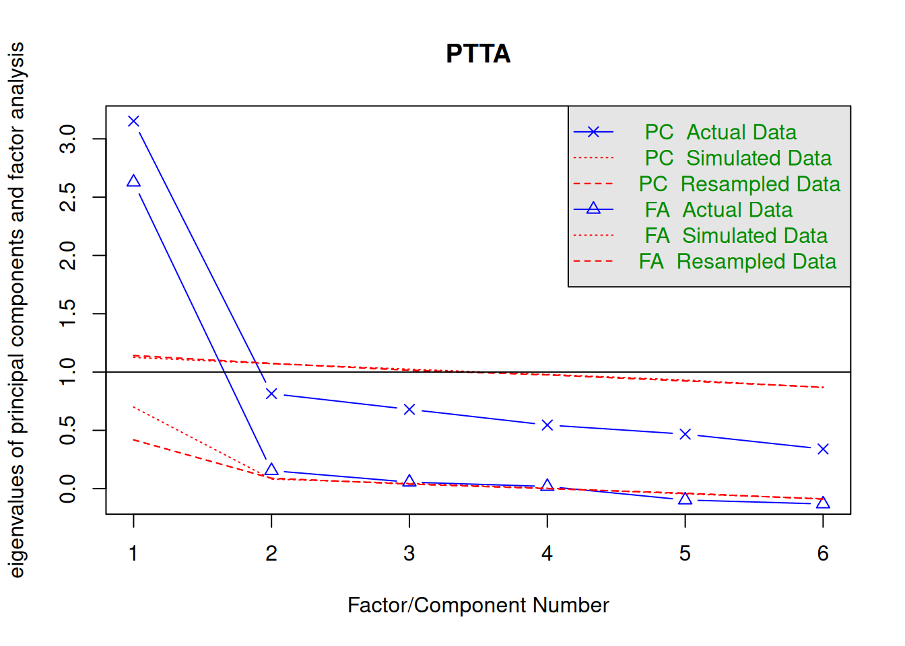
Parallel analysis suggests that the number of factors = 2 and the number of components = 1
PTTA
Number of components: 1
EFA factor loadings (1 factor solution):
Loadings:
MR1
PTTA1 0.649
PTTA5r 0.438
PTTA6 0.807
PTTA2r 0.709
PTTA3 0.620
PTTA4r 0.690
MR1
SS loadings 2.628
Proportion Var 0.438
CFA summary and fit statistics:
lavaan 0.6.17 ended normally after 23 iterations
Estimator ML
Optimization method NLMINB
Number of model parameters 12
Number of observations 631
Model Test User Model:
Standard Scaled
Test Statistic 40.483 36.769
Degrees of freedom 9 9
P-value (Chi-square) 0.000 0.000
Scaling correction factor 1.101
Yuan-Bentler correction (Mplus variant)
Model Test Baseline Model:
Test statistic 952.965 774.751
Degrees of freedom 15 15
P-value 0.000 0.000
Scaling correction factor 1.230
User Model versus Baseline Model:
Comparative Fit Index (CFI) 0.966 0.963
Tucker-Lewis Index (TLI) 0.944 0.939
Robust Comparative Fit Index (CFI) 0.967
Robust Tucker-Lewis Index (TLI) 0.945
Loglikelihood and Information Criteria:
Loglikelihood user model (H0) -5075.862 -5075.862
Scaling correction factor 1.055
for the MLR correction
Loglikelihood unrestricted model (H1) -5055.621 -5055.621
Scaling correction factor 1.074
for the MLR correction
Akaike (AIC) 10175.725 10175.725
Bayesian (BIC) 10229.092 10229.092
Sample-size adjusted Bayesian (SABIC) 10190.994 10190.994
Root Mean Square Error of Approximation:
RMSEA 0.074 0.070
90 Percent confidence interval - lower 0.052 0.048
90 Percent confidence interval - upper 0.099 0.093
P-value H_0: RMSEA <= 0.050 0.037 0.063
P-value H_0: RMSEA >= 0.080 0.377 0.252
Robust RMSEA 0.073
90 Percent confidence interval - lower 0.050
90 Percent confidence interval - upper 0.099
P-value H_0: Robust RMSEA <= 0.050 0.052
P-value H_0: Robust RMSEA >= 0.080 0.359
Standardized Root Mean Square Residual:
SRMR 0.032 0.032
Parameter Estimates:
Standard errors Sandwich
Information bread Observed
Observed information based on Hessian
Latent Variables:
Estimate Std.Err z-value P(>|z|) Std.lv Std.all
PTTA =~
PTTA1 1.000 0.658 0.633
PTTA5r 0.710 0.091 7.813 0.000 0.467 0.403
PTTA6 1.146 0.077 14.801 0.000 0.754 0.760
PTTA2r 1.101 0.091 12.112 0.000 0.724 0.676
PTTA3 0.804 0.069 11.630 0.000 0.529 0.571
PTTA4r 1.084 0.099 10.963 0.000 0.713 0.653
Variances:
Estimate Std.Err z-value P(>|z|) Std.lv Std.all
.PTTA1 0.647 0.049 13.095 0.000 0.647 0.600
.PTTA5r 1.122 0.065 17.390 0.000 1.122 0.837
.PTTA6 0.415 0.038 10.773 0.000 0.415 0.422
.PTTA2r 0.622 0.057 10.857 0.000 0.622 0.543
.PTTA3 0.577 0.042 13.677 0.000 0.577 0.674
.PTTA4r 0.683 0.053 12.988 0.000 0.683 0.573
PTTA 0.433 0.055 7.873 0.000 1.000 1.000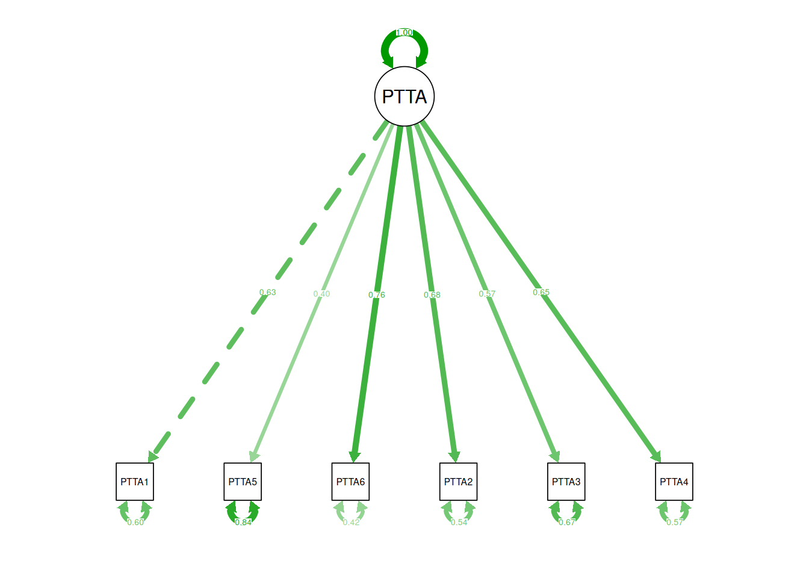
CFA first 6 Modification Indices:
lhs op rhs mi epc sepc.lv sepc.all sepc.nox
23 PTTA6 ~~ PTTA2r 15.722 -0.134 -0.134 -0.265 -0.265
27 PTTA2r ~~ PTTA4r 14.438 0.135 0.135 0.207 0.207
18 PTTA1 ~~ PTTA4r 11.281 -0.115 -0.115 -0.173 -0.173
28 PTTA3 ~~ PTTA4r 7.997 -0.087 -0.087 -0.139 -0.139
24 PTTA6 ~~ PTTA3 4.534 0.060 0.060 0.122 0.122
14 PTTA1 ~~ PTTA5r 4.132 -0.078 -0.078 -0.092 -0.0925.2.4 compute mean scores
ques_study$mean_AIAS <- rowMeans(x = ques_study[, str_subset(string = colnames(ques_study), pattern = "^AIAS")], na.rm = FALSE) # no missing
ques_study$mean_PTTA <- rowMeans(x = ques_study[, str_subset(string = colnames(ques_study), pattern = "^PTTA")], na.rm = FALSE) # no missing6 Descriptive Statistics
sample
table(ques_study$sociodemo_gender)
female intersex male none
308 5 313 5 table(ques_study$sociodemo_gender) / nrow(ques_study)
female intersex male none
0.487341772 0.007911392 0.495253165 0.007911392 summary(ques_study$sociodemo_age) Min. 1st Qu. Median Mean 3rd Qu. Max. NA's
18.00 24.00 28.00 29.68 34.00 73.00 1 hist(ques_study$sociodemo_age)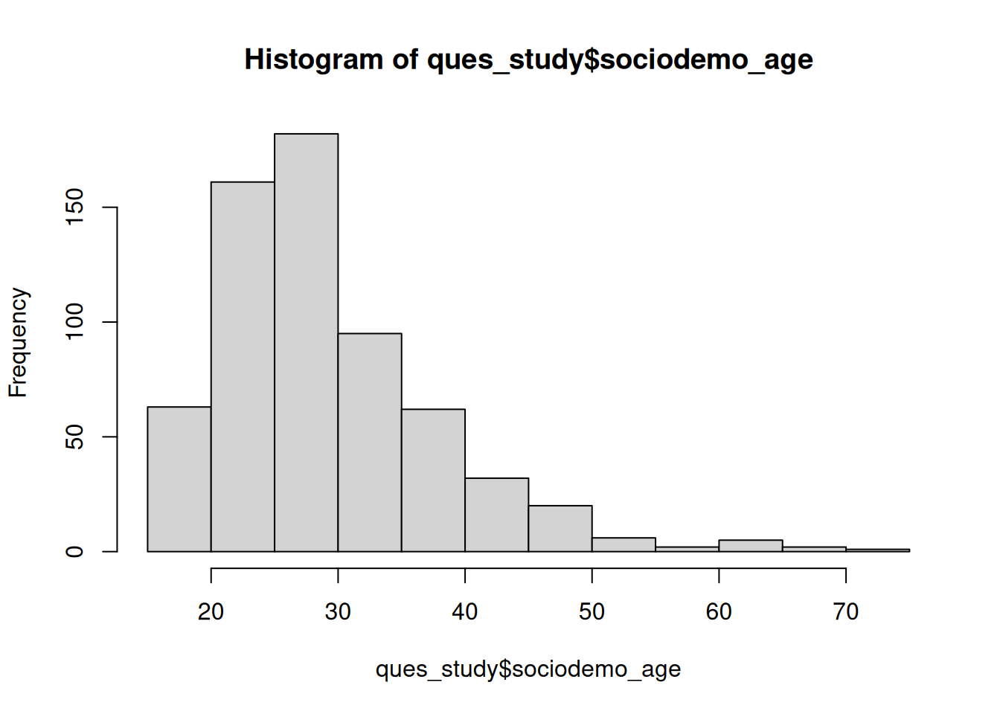
# Ich finde es wichtig, dass ein Mensch in dem beschriebenen Kontext Aufsicht über KI hat.
barplot(table(ques_study$`PUR-1`))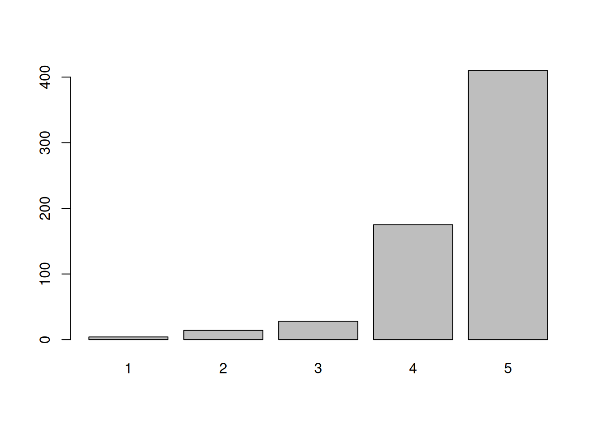
# Ich halte den Einsatz von KI in diesem Kontext für riskant.
barplot(table(ques_study$`PUR-2`))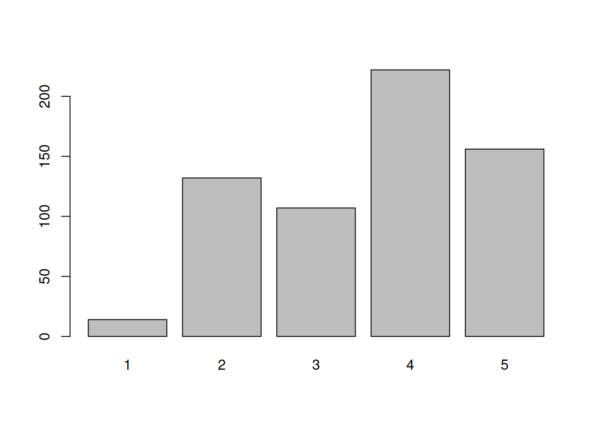
scales
psych::corPlot(r = cor(ques_study[, c("mean_AIAS", "mean_PTTA", "PUR-1", "PUR-2", "mean_valence")], use = "pairwise"))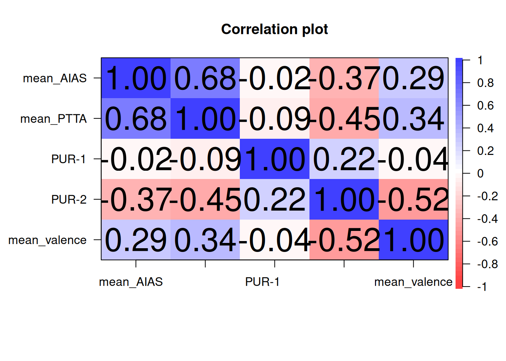
7 Analyze data - scales
ggstatsplot::ggbetweenstats(data = ques_study, x = study_condition, y = mean_valence, type = "parametric")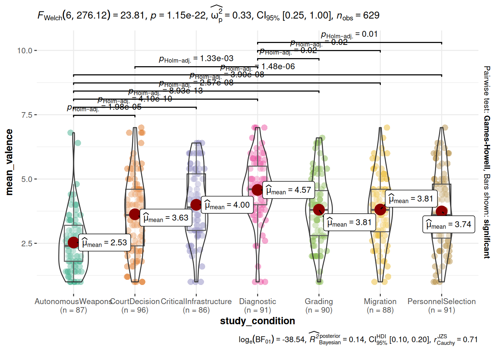
# ggstatsplot::ggbetweenstats(data = mean_sd_valence_per_person, x = study_condition, y = mean_valence, type = "parametric")
# Run the Between-Subjects ANOVA
model_anova <- aov_ez(
id = "PROLIFIC_PID", # Replace with your subject ID column name
dv = "mean_valence", # Your Dependent Variable
data = ques_study,
between = "study_condition" # Your Independent Variable
)Warning: Missing values for 3 ID(s), which were removed before analysis:
63454008d05cecf666f74e13, 69308971196454c9656823cb, 69660bceb7b2c1616d315373
Below the first few rows (in wide format) of the removed cases with missing data.
PROLIFIC_PID study_condition .
# 144 63454008d05cecf666f74e13 AutonomousWeapons NA
# 434 69308971196454c9656823cb CriticalInfrastructure NA
# 531 69660bceb7b2c1616d315373 Grading NAContrasts set to contr.sum for the following variables: study_condition# Print the ANOVA table
print(model_anova)Anova Table (Type 3 tests)
Response: mean_valence
Effect df MSE F ges p.value
1 study_condition 6, 622 1.79 18.53 *** .152 <.001
---
Signif. codes: 0 '***' 0.001 '**' 0.01 '*' 0.05 '+' 0.1 ' ' 1# Get the marginal means
ls_means <- emmeans(model_anova, specs = "study_condition")
# Perform pairwise comparisons
post_hocs <- pairs(ls_means, adjust = "tukey")
# View results
print(post_hocs) contrast estimate SE df t.ratio p.value
AutonomousWeapons - CourtDecision -1.0991 0.198 622 -5.556 <0.0001
AutonomousWeapons - CriticalInfrastructure -1.4682 0.203 622 -7.224 <0.0001
AutonomousWeapons - Diagnostic -2.0454 0.200 622 -10.207 <0.0001
AutonomousWeapons - Grading -1.2777 0.201 622 -6.359 <0.0001
AutonomousWeapons - Migration -1.2826 0.202 622 -6.348 <0.0001
AutonomousWeapons - PersonnelSelection -1.2091 0.200 622 -6.034 <0.0001
CourtDecision - CriticalInfrastructure -0.3690 0.198 622 -1.860 0.5081
CourtDecision - Diagnostic -0.9463 0.196 622 -4.839 <0.0001
CourtDecision - Grading -0.1786 0.196 622 -0.911 0.9709
CourtDecision - Migration -0.1835 0.197 622 -0.930 0.9676
CourtDecision - PersonnelSelection -0.1100 0.196 622 -0.563 0.9978
CriticalInfrastructure - Diagnostic -0.5772 0.201 622 -2.872 0.0636
CriticalInfrastructure - Grading 0.1905 0.202 622 0.945 0.9650
CriticalInfrastructure - Migration 0.1856 0.203 622 0.916 0.9701
CriticalInfrastructure - PersonnelSelection 0.2590 0.201 622 1.289 0.8571
Diagnostic - Grading 0.7677 0.199 622 3.864 0.0024
Diagnostic - Migration 0.7628 0.200 622 3.817 0.0028
Diagnostic - PersonnelSelection 0.8363 0.198 622 4.221 0.0006
Grading - Migration -0.0049 0.200 622 -0.024 1.0000
Grading - PersonnelSelection 0.0686 0.199 622 0.345 0.9999
Migration - PersonnelSelection 0.0735 0.200 622 0.368 0.9998
P value adjustment: tukey method for comparing a family of 7 estimates ass_study_clean <- ass_study %>%
filter(!is.na(sentiment_label),
!is.na(study_condition)) %>%
mutate(
sentiment_label = factor(sentiment_label),
study_condition = factor(study_condition)
)
tab <- table(ass_study_clean$sentiment_label,
ass_study_clean$study_condition)
tab
AutonomousWeapons CourtDecision CriticalInfrastructure Diagnostic
NEGATIVE 1860 1607 1397 1136
POSITIVE 780 1273 1213 1594
Grading Migration PersonnelSelection
NEGATIVE 1257 1414 1457
POSITIVE 1473 1226 1273chisq_res <- chisq.test(tab)
chisq_res
Pearson's Chi-squared test
data: tab
X-squared = 527.12, df = 6, p-value < 2.2e-16chisq_res$expected
AutonomousWeapons CourtDecision CriticalInfrastructure Diagnostic
NEGATIVE 1410.228 1538.43 1394.203 1458.304
POSITIVE 1229.772 1341.57 1215.797 1271.696
Grading Migration PersonnelSelection
NEGATIVE 1458.304 1410.228 1458.304
POSITIVE 1271.696 1229.772 1271.696cramers_v(tab)Cramer's V (adj.) | 95% CI
--------------------------------
0.17 | [0.15, 1.00]
- One-sided CIs: upper bound fixed at [1.00].ggplot(ass_study_clean,
aes(x = study_condition,
fill = sentiment_label)) +
geom_bar(position = "fill") +
scale_y_continuous(labels = scales::percent_format()) +
labs(
x = "Study Condition",
y = "Proportion",
fill = "Sentiment",
title = "Sentiment Distribution by Study Condition"
) +
theme_minimal(base_size = 14)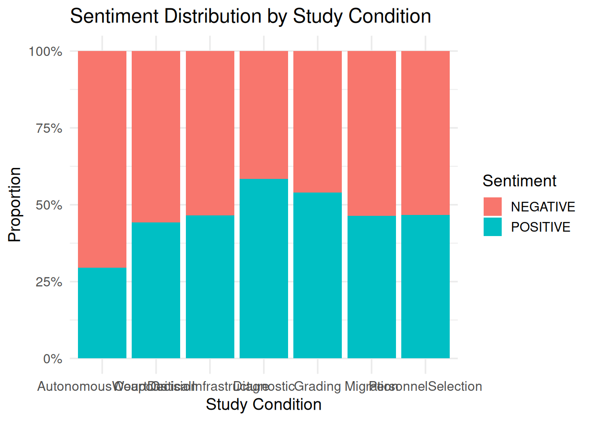
ggstatsplot::ggbetweenstats(data = ques_study, x = study_condition, y = `PUR-2`, type = "parametric")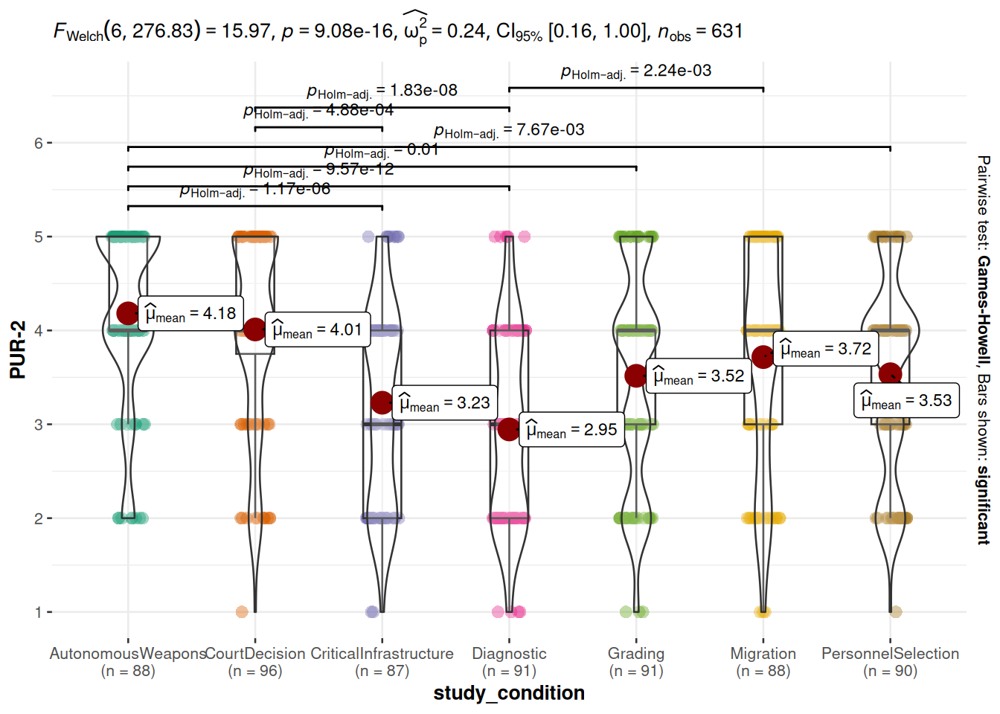
# Run the Between-Subjects ANOVA
model_anova <- aov_ez(
id = "PROLIFIC_PID", # Replace with your subject ID column name
dv = "PUR-2", # Your Dependent Variable
data = ques_study,
between = "study_condition" # Your Independent Variable
)Warning: Missing values for 1 ID(s), which were removed before analysis:
698092ec26802cfd45c519cf
Below the first few rows (in wide format) of the removed cases with missing data.
PROLIFIC_PID study_condition .
# 622 698092ec26802cfd45c519cf PersonnelSelection NAContrasts set to contr.sum for the following variables: study_condition# Print the ANOVA table
print(model_anova)Anova Table (Type 3 tests)
Response: PUR-2
Effect df MSE F ges p.value
1 study_condition 6, 624 1.14 14.45 *** .122 <.001
---
Signif. codes: 0 '***' 0.001 '**' 0.01 '*' 0.05 '+' 0.1 ' ' 1# Get the marginal means
ls_means <- emmeans(model_anova, specs = "study_condition")
# Perform pairwise comparisons
post_hocs <- pairs(ls_means, adjust = "tukey")
# View results
print(post_hocs) contrast estimate SE df t.ratio p.value
AutonomousWeapons - CourtDecision 0.1714 0.158 624 1.086 0.9321
AutonomousWeapons - CriticalInfrastructure 0.9519 0.162 624 5.889 <0.0001
AutonomousWeapons - Diagnostic 1.2368 0.160 624 7.737 <0.0001
AutonomousWeapons - Grading 0.6653 0.160 624 4.162 0.0007
AutonomousWeapons - Migration 0.4659 0.161 624 2.891 0.0604
AutonomousWeapons - PersonnelSelection 0.6485 0.160 624 4.046 0.0011
CourtDecision - CriticalInfrastructure 0.7805 0.158 624 4.932 <0.0001
CourtDecision - Diagnostic 1.0654 0.156 624 6.811 <0.0001
CourtDecision - Grading 0.4939 0.156 624 3.158 0.0276
CourtDecision - Migration 0.2945 0.158 624 1.867 0.5035
CourtDecision - PersonnelSelection 0.4771 0.157 624 3.041 0.0393
CriticalInfrastructure - Diagnostic 0.2848 0.160 624 1.777 0.5643
CriticalInfrastructure - Grading -0.2866 0.160 624 -1.788 0.5568
CriticalInfrastructure - Migration -0.4860 0.162 624 -3.007 0.0434
CriticalInfrastructure - PersonnelSelection -0.3034 0.161 624 -1.888 0.4892
Diagnostic - Grading -0.5714 0.158 624 -3.605 0.0062
Diagnostic - Migration -0.7709 0.160 624 -4.823 <0.0001
Diagnostic - PersonnelSelection -0.5883 0.159 624 -3.701 0.0044
Grading - Migration -0.1994 0.160 624 -1.248 0.8751
Grading - PersonnelSelection -0.0168 0.159 624 -0.106 1.0000
Migration - PersonnelSelection 0.1826 0.160 624 1.139 0.9158
P value adjustment: tukey method for comparing a family of 7 estimates ggstatsplot::ggbetweenstats(data = ques_study, x = study_condition, y = mean_AIAS, type = "parametric")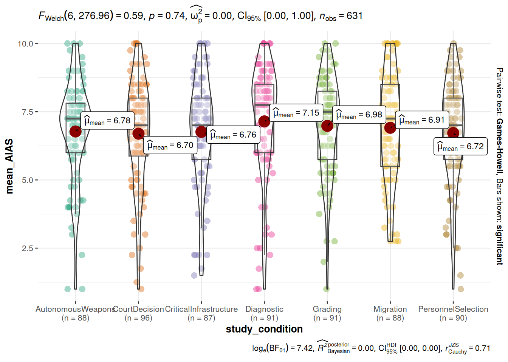
# Run the Between-Subjects ANOVA
model_anova <- aov_ez(
id = "PROLIFIC_PID", # Replace with your subject ID column name
dv = "mean_AIAS", # Your Dependent Variable
data = ques_study,
between = "study_condition" # Your Independent Variable
)Warning: Missing values for 1 ID(s), which were removed before analysis:
698092ec26802cfd45c519cf
Below the first few rows (in wide format) of the removed cases with missing data.
PROLIFIC_PID study_condition .
# 622 698092ec26802cfd45c519cf PersonnelSelection NAContrasts set to contr.sum for the following variables: study_condition# Print the ANOVA table
print(model_anova)Anova Table (Type 3 tests)
Response: mean_AIAS
Effect df MSE F ges p.value
1 study_condition 6, 624 3.88 0.64 .006 .701
---
Signif. codes: 0 '***' 0.001 '**' 0.01 '*' 0.05 '+' 0.1 ' ' 1# Get the marginal means
ls_means <- emmeans(model_anova, specs = "study_condition")
# Perform pairwise comparisons
post_hocs <- pairs(ls_means, adjust = "tukey")
# View results
print(post_hocs) contrast estimate SE df t.ratio p.value
AutonomousWeapons - CourtDecision 0.0803 0.291 624 0.276 1.0000
AutonomousWeapons - CriticalInfrastructure 0.0141 0.298 624 0.047 1.0000
AutonomousWeapons - Diagnostic -0.3700 0.294 624 -1.257 0.8713
AutonomousWeapons - Grading -0.2052 0.294 624 -0.697 0.9928
AutonomousWeapons - Migration -0.1364 0.297 624 -0.459 0.9993
AutonomousWeapons - PersonnelSelection 0.0561 0.295 624 0.190 1.0000
CourtDecision - CriticalInfrastructure -0.0662 0.292 624 -0.227 1.0000
CourtDecision - Diagnostic -0.4503 0.288 624 -1.563 0.7063
CourtDecision - Grading -0.2855 0.288 624 -0.991 0.9560
CourtDecision - Migration -0.2166 0.291 624 -0.745 0.9896
CourtDecision - PersonnelSelection -0.0241 0.289 624 -0.084 1.0000
CriticalInfrastructure - Diagnostic -0.3841 0.295 624 -1.301 0.8517
CriticalInfrastructure - Grading -0.2193 0.295 624 -0.742 0.9898
CriticalInfrastructure - Migration -0.1504 0.298 624 -0.505 0.9988
CriticalInfrastructure - PersonnelSelection 0.0420 0.296 624 0.142 1.0000
Diagnostic - Grading 0.1648 0.292 624 0.565 0.9977
Diagnostic - Migration 0.2337 0.294 624 0.794 0.9856
Diagnostic - PersonnelSelection 0.4262 0.293 624 1.455 0.7710
Grading - Migration 0.0688 0.294 624 0.234 1.0000
Grading - PersonnelSelection 0.2613 0.293 624 0.893 0.9737
Migration - PersonnelSelection 0.1925 0.295 624 0.652 0.9950
P value adjustment: tukey method for comparing a family of 7 estimates ggstatsplot::ggbetweenstats(data = ques_study, x = study_condition, y = mean_PTTA, type = "parametric")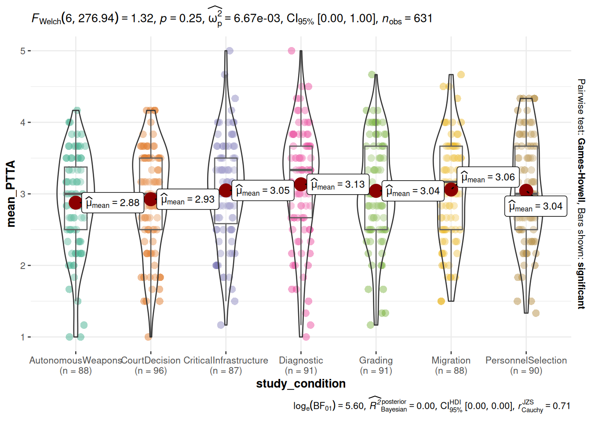
# Run the Between-Subjects ANOVA
model_anova <- aov_ez(
id = "PROLIFIC_PID", # Replace with your subject ID column name
dv = "mean_PTTA", # Your Dependent Variable
data = ques_study,
between = "study_condition" # Your Independent Variable
)Warning: Missing values for 1 ID(s), which were removed before analysis:
698092ec26802cfd45c519cf
Below the first few rows (in wide format) of the removed cases with missing data.
PROLIFIC_PID study_condition .
# 622 698092ec26802cfd45c519cf PersonnelSelection NAContrasts set to contr.sum for the following variables: study_condition# Print the ANOVA table
print(model_anova)Anova Table (Type 3 tests)
Response: mean_PTTA
Effect df MSE F ges p.value
1 study_condition 6, 624 0.52 1.32 .013 .246
---
Signif. codes: 0 '***' 0.001 '**' 0.01 '*' 0.05 '+' 0.1 ' ' 1# Get the marginal means
ls_means <- emmeans(model_anova, specs = "study_condition")
# Perform pairwise comparisons
post_hocs <- pairs(ls_means, adjust = "tukey")
# View results
print(post_hocs) contrast estimate SE df t.ratio
AutonomousWeapons - CourtDecision -0.048453 0.107 624 -0.454
AutonomousWeapons - CriticalInfrastructure -0.170999 0.109 624 -1.564
AutonomousWeapons - Diagnostic -0.256806 0.108 624 -2.376
AutonomousWeapons - Grading -0.165231 0.108 624 -1.529
AutonomousWeapons - Migration -0.183712 0.109 624 -1.686
AutonomousWeapons - PersonnelSelection -0.165699 0.108 624 -1.529
CourtDecision - CriticalInfrastructure -0.122546 0.107 624 -1.145
CourtDecision - Diagnostic -0.208352 0.106 624 -1.970
CourtDecision - Grading -0.116777 0.106 624 -1.104
CourtDecision - Migration -0.135259 0.107 624 -1.268
CourtDecision - PersonnelSelection -0.117245 0.106 624 -1.105
CriticalInfrastructure - Diagnostic -0.085807 0.108 624 -0.792
CriticalInfrastructure - Grading 0.005768 0.108 624 0.053
CriticalInfrastructure - Migration -0.012713 0.109 624 -0.116
CriticalInfrastructure - PersonnelSelection 0.005300 0.109 624 0.049
Diagnostic - Grading 0.091575 0.107 624 0.854
Diagnostic - Migration 0.073094 0.108 624 0.676
Diagnostic - PersonnelSelection 0.091107 0.107 624 0.848
Grading - Migration -0.018482 0.108 624 -0.171
Grading - PersonnelSelection -0.000468 0.107 624 -0.004
Migration - PersonnelSelection 0.018013 0.108 624 0.166
p.value
0.9993
0.7052
0.2106
0.7275
0.6260
0.7274
0.9138
0.4351
0.9269
0.8665
0.9265
0.9858
1.0000
1.0000
1.0000
0.9789
0.9938
0.9797
1.0000
1.0000
1.0000
P value adjustment: tukey method for comparing a family of 7 estimates 8 Analyze data - word associations
normalize_text <- function(text,
lowercase = TRUE,
remove_punctuation = TRUE,
remove_numbers = TRUE,
remove_extra_spaces = TRUE,
normalize_umlauts = TRUE) {
# ensure character
text <- as.character(text)
# convert encoding safely (important for German text)
text <- iconv(text, to = "UTF-8")
# lowercase
if (lowercase) {
text <- tolower(text)
}
# normalize German umlauts (optional but common)
if (normalize_umlauts) {
text <- gsub("ä", "ae", text, fixed = TRUE)
text <- gsub("ö", "oe", text, fixed = TRUE)
text <- gsub("ü", "ue", text, fixed = TRUE)
text <- gsub("ß", "ss", text, fixed = TRUE)
}
# remove punctuation
if (remove_punctuation) {
text <- gsub("[[:punct:]]+", " ", text)
}
# remove numbers
if (remove_numbers) {
text <- gsub("[0-9]+", " ", text)
}
# remove extra whitespace
if (remove_extra_spaces) {
text <- gsub("\\s+", " ", text)
}
# trim leading/trailing spaces
text <- trimws(text)
return(text)
}
length(unique(ass_study$response))[1] 9575length(unique(ass_study$response_translated))[1] 7632ass_study$response_translated_clean <- normalize_text(text = ass_study$response_translated)
length(unique(ass_study$response_translated_clean))[1] 7491